After the viewport transform a triangle is three points \mathbf a, \mathbf b, \mathbf c in pixel coordinates (with a depth each). A pixel is drawn if its centre lies inside.
The test, for each edge: on which side of the line \mathbf a \to \mathbf b is the pixel centre \mathbf p?
E_{ab} > 0: \mathbf p is to the left of \mathbf a \to \mathbf b; < 0: to the right; = 0: on the line.
For a counter-clockwise triangle, inside = all three edge functions positive.
E is linear in \mathbf p: one pixel to the right changes it by a constant. And every pixel is tested independently: thousands of pixels at once, which is why GPUs are fast at this (Pineda, 1988).
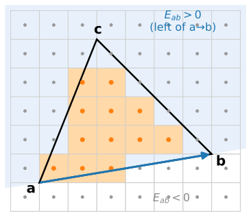
The math: edge functions are areas
E_{ab}(\mathbf p) is the 2\times2 determinant \det[\mathbf b - \mathbf a,\ \mathbf p - \mathbf a]: twice the signed area of the triangle \mathbf a, \mathbf b, \mathbf p (positive when counter-clockwise).
Linear: E_{ab}(\mathbf p + (1, 0)) = E_{ab}(\mathbf p) - (b_y - a_y) and E_{ab}(\mathbf p + (0, 1)) = E_{ab}(\mathbf p) + (b_x - a_x): a rasteriser walks along a row with one addition per edge.
The three edge functions at \mathbf p split the triangle into three sub-triangles:
E_{bc}(\mathbf p) + E_{ca}(\mathbf p) + E_{ab}(\mathbf p) = E_{ab}(\mathbf c) = 2\,\text{area}(\mathbf a, \mathbf b, \mathbf c),
so their ratios to the whole area are the barycentric coordinates (next slide). Example: \mathbf a = (1, 1), \mathbf b = (7, 2), \mathbf c = (3, 6) has E_{ab}(\mathbf c) = 28; at \mathbf p = (4.5, 3.5) the three values are 4, 12.5, 11.5, summing to 28.
b_a is the share of the area of the sub-triangle opposite\mathbf a: 1 at \mathbf a, 0 on the far edge.
Any value given at the vertices (colour, depth, normal, texture coordinate) is interpolated as f(\mathbf p) = b_a f_a + b_b f_b + b_c f_c.
Inside the triangle all three are positive (the inside test again).
The same idea as bilinear interpolation (images unit): weights from areas that sum to one. A square split into two triangles is interpolated differently: there is a crease along the diagonal.
Example: at \mathbf p = (4.5, 3.5) in the triangle above, (b_a, b_b, b_c) = (0.143, 0.446, 0.411); with depths 0.2, 0.6, 0.4 at the corners the pixel gets depth 0.461.
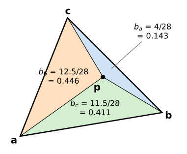
Try it: a rasteriser, pixel by pixel
Shared edges and back faces
Shared edges: a pixel centre exactly on the edge between two triangles must be drawn once, not twice (double blending) and not zero times (a crack). The top-left rule: it belongs to the triangle for which the edge is a “top” or “left” edge.
Back-face culling: after projection, a triangle seen from behind has the opposite winding: its area E_{ab}(\mathbf c) is negative. For a closed, consistently wound mesh these triangles are hidden anyway, so they are skipped: about half the work saved.
A mesh with inconsistent winding (previous unit) gets holes when culling is on.
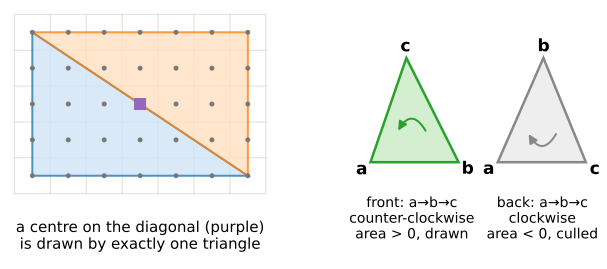
The z-buffer
Several triangles can cover the same pixel. Which one is in front?
Keep a second image, the depth buffer (z-buffer, Catmull 1974), one depth per pixel, initially “far”.
For each covered pixel: interpolate the triangle’s depth; draw the pixel only if it is nearer than the stored depth, and store the new depth.
The result does not depend on the drawing order (for opaque surfaces), and intersecting triangles come out right, pixel by pixel.
Transparency breaks it: a half-transparent surface must be blended with what is behind it, so order matters again (compositing: the texture and volume units).
Two surfaces at (almost) the same depth flicker between each other: z-fighting.
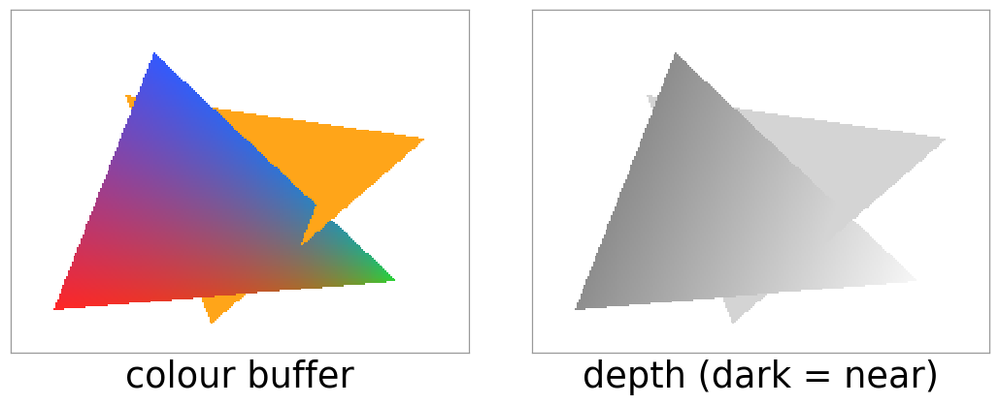
Depth precision is uneven
Depth after the projection is z_\text{ndc} = A + B/z (previous unit): it changes fast near the camera, slowly far away.
The depth buffer stores it with a fixed number of bits (24-bit integers, or 32-bit floats: see the floating-point unit). Equal steps of z_\text{ndc} are tiny steps in distance near the camera and large steps far away.
The near plane decides how much is wasted: with n = 0.01 and f = 100, half of the depth range is used up within 0.02 units of the camera; with n = 1, within 2 units.
Two surfaces at distances 50 and 51: with n = 0.01 they are 0.26 steps of a 16-bit buffer apart (same stored value: z-fighting); with n = 1, 26 steps.
Rule: push the near plane out as far as you can; the far plane matters much less.
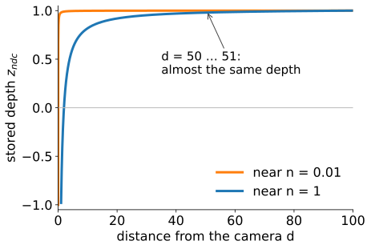
The math: depth resolution
With z_\text{ndc} = A - B/d in terms of the distance d = -z > 0 and B = 2fn/(f - n):
A buffer with k bits has \Delta z_\text{ndc} = 2/(2^k - 1). The smallest separable distance grows with d^2 and shrinks only with n: ten times larger n gives ten times finer depth everywhere; f hardly matters.
Example: n = 0.01, f = 100: z_\text{ndc}(50) = 0.9998000 and z_\text{ndc}(51) = 0.9998078, a difference of 7.8\cdot10^{-6}, while a 16-bit step is 3.1\cdot10^{-5}.
Perspective-correct interpolation
Barycentric weights measured on the screen are not the weights in 3D: the far half of a receding triangle is squeezed into fewer pixels.
Interpolating a texture coordinate with screen weights bends straight lines: a receding checkerboard made of two triangles kinks along the diagonal.
The fix: on the screen, 1/w and f/w (attribute divided by w) are linear. Interpolate both, then divide: f = \frac{b_a f_a/w_a + b_b f_b/w_b + b_c f_c/w_c}{b_a/w_a + b_b/w_b + b_c/w_c}.
Example: an edge from w = 1 (u = 0) to w = 3 (u = 1). At the screen midpoint: affine gives u = 0.5; correct is \tfrac{0.5\cdot0 + 0.5\cdot\frac13}{0.5 + 0.5\cdot\frac13} = 0.25.
Orthographic views (w = 1) need no correction; depth z_\text{ndc} itself is already linear on the screen.
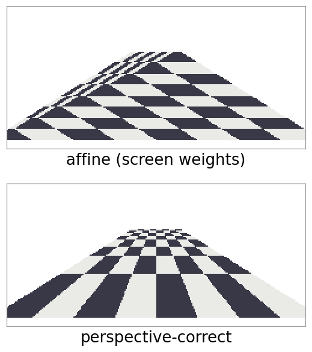
The math: why 1/w is linear on the screen
A triangle lies in a plane \alpha x + \beta y + \gamma z = \delta in view space (\delta \ne 0 unless the plane passes through the eye). A point on it projects to x_s = x/w, y_s = y/w with w = -z. Divide the plane equation by w:
affine in the screen coordinates. An attribute that is affine in 3D, f = \mathbf g\cdot\mathbf x + h, gives f/w = \mathbf g\cdot(x_s, y_s, -1) + h/w: also affine on the screen. So screen-space barycentrics interpolate 1/w and f/w exactly, and their ratio is f.
Try it: affine vs perspective-correct, and depth precision
Clipping and jagged edges
Clipping: a triangle that crosses the near plane is cut there in clip space, before the divide (vertices behind the camera have w < 0). The cut polygon is drawn as a fan of triangles. The other sides of the view need no clipping: pixels outside the screen are simply never visited.
Edge aliasing: one sample (the centre) per pixel makes edges staircase-like and lets thin triangles vanish between centres. Multisampling tests several points per pixel and averages coverage (the sampling of the Fourier unit).
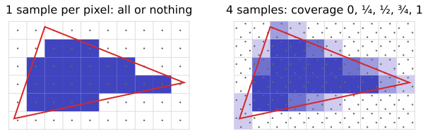
Shading: how bright is a surface?
A light from direction \mathbf l, a surface with unit normal \mathbf n, the eye in direction \mathbf v (all unit vectors pointing away from the surface):
Lambert (matte): brightness k_d \max(0, \mathbf n\cdot\mathbf l). A tilted roof catches less light: the light falling on it is spread over a larger area, by the factor \cos\theta = \mathbf n\cdot\mathbf l.
Ambientk_a: a constant for all the light bounced around by the scene (a crude stand-in).
Specular (shiny): a highlight where the mirror direction of the light points at the eye. Phong: k_s \max(0, \mathbf r\cdot\mathbf v)^s; Blinn–Phong: k_s \max(0, \mathbf n\cdot\mathbf h)^s with the half vector\mathbf h between \mathbf l and \mathbf v. The shininesss makes the highlight small and sharp.
Physically based shading (energy conservation, measured materials) refines this; not covered.
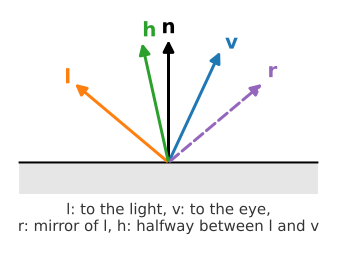
The math: Phong and Blinn–Phong
Mirror direction and half vector:
\mathbf r = 2(\mathbf n\cdot\mathbf l)\,\mathbf n - \mathbf l, \qquad \mathbf h = \frac{\mathbf l + \mathbf v}{\lVert \mathbf l + \mathbf v\rVert}.
\mathbf r\cdot\mathbf v = 1 exactly when \mathbf h = \mathbf n: both models peak in the mirror configuration. Away from it, the angle between \mathbf n and \mathbf h is about half the angle between \mathbf r and \mathbf v, so Blinn–Phong’s highlight is wider for the same s (roughly s_\text{Phong} \approx s_\text{Blinn}/4 gives similar highlights).
Example: \mathbf n = (0, 0, 1), \mathbf v = (0, 0, 1), \mathbf l = (1, 0, 1)/\sqrt2, k_a = 0.1, k_d = 0.8, k_s = 0.5, s = 20. Diffuse: 0.1 + 0.8\cdot0.707 = 0.666. Phong: \mathbf r\cdot\mathbf v = 0.707, 0.5\cdot0.707^{20} = 0.0005. Blinn–Phong: \mathbf n\cdot\mathbf h = \cos 22.5° = 0.924, 0.5\cdot0.924^{20} = 0.103.
Where to evaluate the lighting
Flat: once per triangle, with the face normal. Facets are visible; right for a cut gem, wrong for a sphere.
Gouraud (1971): at the vertices, with vertex normals; the colours are interpolated across the triangle. Cheap, smooth, but a highlight that falls inside a triangle is missed (and highlights look star-shaped).
Per pixel (Phong 1975): interpolate the normal, renormalise, light every pixel. What GPUs do today.
Vertex normals of a mesh: the area-weighted average of the normals of the faces around the vertex (the sum of the un-normalised cross products), unless the mesh has a known exact normal (a sphere) or a crease that should stay sharp.
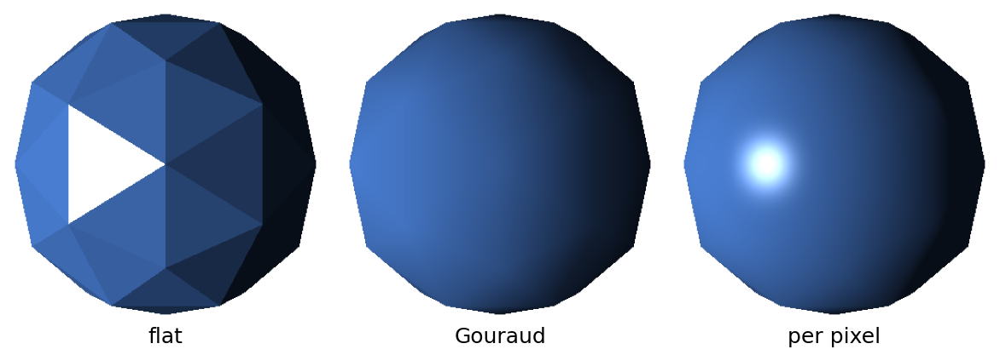
Try it: shading
Transforming normals
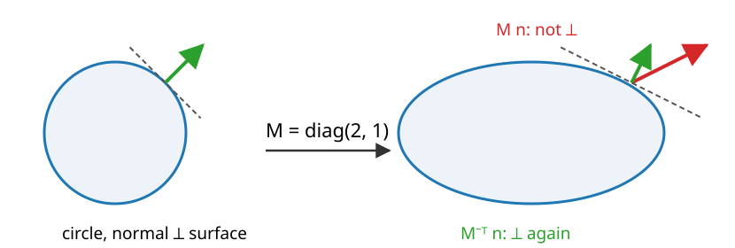
A normal is defined by being perpendicular to the surface. Under a rotation or a uniform scale, M\mathbf n stays perpendicular. Under a non-uniform scale it does not: squash a circle into an ellipse, and M\mathbf n leans the wrong way.
The right transform is M^{-\top} (the inverse transpose), applied to the normal and then renormalised. For a rotation M^{-\top} = M; for \mathrm{diag}(2, 1, 1) it is \mathrm{diag}(\tfrac12, 1, 1).
The math: why the inverse transpose
A tangent \mathbf t (a direction along the surface) transforms like any direction: \mathbf t' = M\mathbf t. The normal must satisfy \mathbf n^\top\mathbf t = 0 before and \mathbf n'^\top\mathbf t' = 0 after, for every tangent. Try \mathbf n' = G\mathbf n:
\mathbf n'^\top\mathbf t' = \mathbf n^\top G^\top M\,\mathbf t = 0 \text{ for all } \mathbf t \perp \mathbf n \quad\Longleftarrow\quad G^\top M = I \quad\Longleftrightarrow\quad G = M^{-\top}.
Example: M = \mathrm{diag}(2, 1, 1), the plane x + y = 1 with \mathbf n = (1, 1, 0) and tangent \mathbf t = (1, -1, 0). M\mathbf t = (2, -1, 0); M\mathbf n = (2, 1, 0) gives M\mathbf n\cdot M\mathbf t = 3 \ne 0; M^{-\top}\mathbf n = (\tfrac12, 1, 0) gives 1 - 1 = 0.
(Only the 3\times3 part matters: normals are directions, w = 0. Any scalar multiple of M^{-\top} works, since the normal is renormalised.)
The GPU pipeline, conceptually
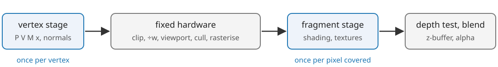
Vertex stage (a small program per vertex): P V M\mathbf x, normals by M^{-\top}, per-vertex lighting for Gouraud.